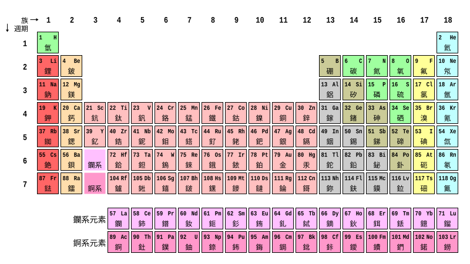

普化期末考 · 練習題
↩ 回設定
🌙
◀
元素週期表
✕

選擇章節
載入章節中…
模式
練習
即點即看，不計錯題
測驗
全部寫完才看結果，計入紀錄
題數
全部
自訂
題
出題優先順序
依序
按章節與題號順序出題
隨機
不依紀錄，完全隨機
優先錯題
答錯次數多的先出
優先沒考過
還沒作答過的先出
作答次數較少
練得少的先出
開始作答
紀錄
尚無紀錄。
⬇ 下載紀錄
⬆ 上傳紀錄
🗑 清除紀錄
← 上一題
下一題 →
看結果
結果
回設定頁